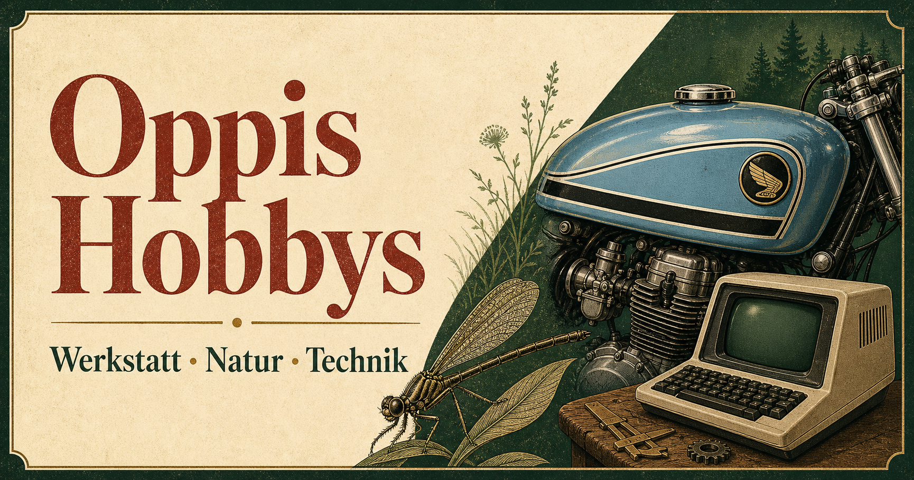
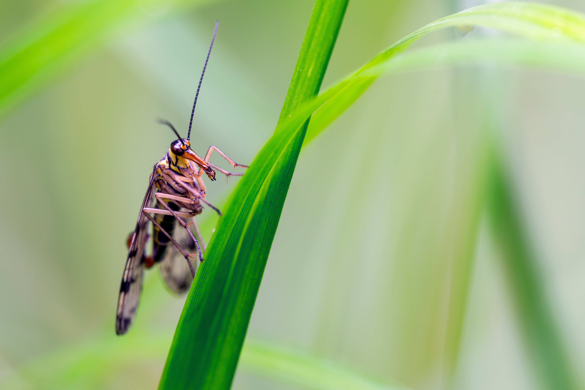
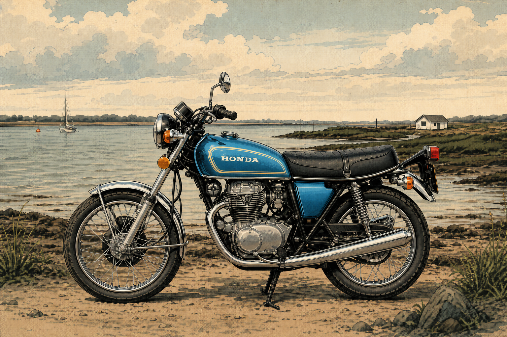
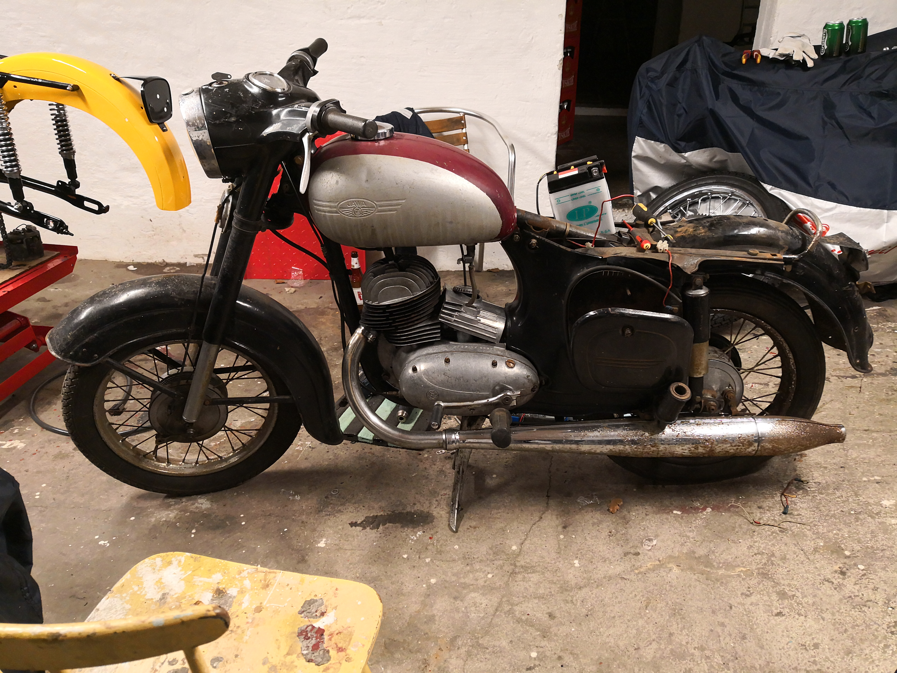
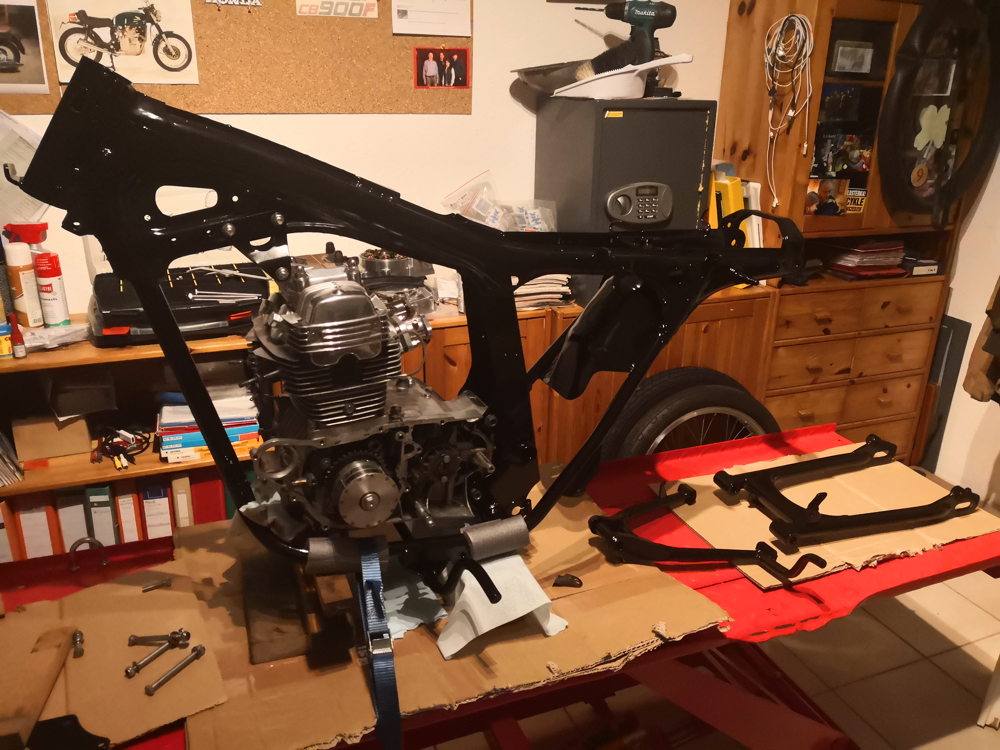
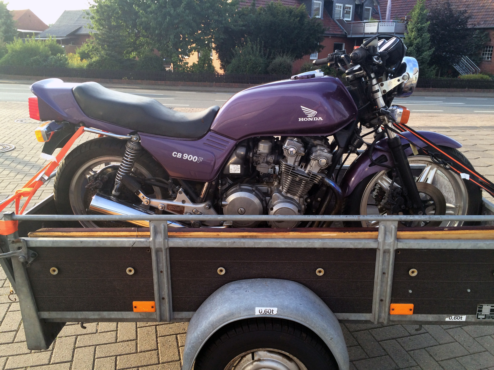
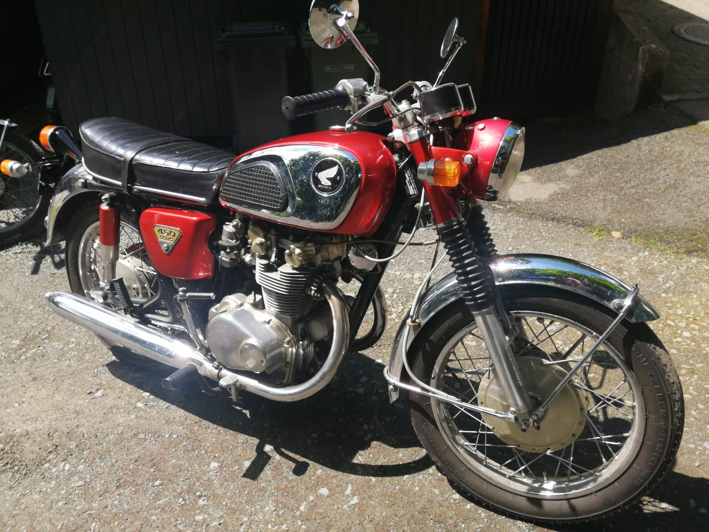

Werkstatt · Natur · Technik
Altes bewahren.
Neues entdecken.
Willkommen bei Oppis Hobbys: Geschichten aus der Motorradwerkstatt, kleine Wunder aus der Makro-Welt und praktische Projekte rund um Linux und Computer.
Meine Projekte ansehen
Werkstatt aktuell
Neues aus der Werkstatt
Honda CB250G · Ventile einbauen – ohne drei Hände
Ventile auszubauen ist oft noch gut machbar. Beim Einbau wird es knifflig: Die Feder muss heruntergedrückt werden, das Ventil darf dabei nicht nach unten rutschen – und die beiden kleinen Ventilkeile müssen oben am Ventilschaft wieder an ihren Platz.
Für die CB250G habe ich mir deshalb dieses kleine Hilfswerkzeug gebaut. Es wird in einer Schraubzwinge eingespannt, drückt die Ventilfeder kontrolliert zusammen und hält zugleich das Ventil in Position. So bleiben beide Hände frei, um die Keile in Ruhe auszubauen oder einzusetzen. Ob es auch bei anderen Honda-Modellen passt, müsste man jeweils prüfen; bei Bedarf verleihe ich es gern.
- Rahmen entrostet & gepulvert
- Motor überholt & eingesetzt
- Anbauteile & Fehlteile
- Lack, Verzollung & Endmontage

02 · Draußen
Makro-Insektenfotografie
Ganz nah dran
Die kleinen Bewohner von Garten, Wiese und Wald zeigen aus der Nähe erstaunliche Formen und Farben. Diese Galerie sammelt Makroaufnahmen – mit Platz für die Geschichten hinter den Bildern.
Zur Makro-Galerie
Makro-Galerie03 · Aktuelles Projekt
Honda CB250G restaurieren
Honda CB250G
Mein aktuelles Projekt ist die Restaurierung einer Honda CB250G von 1976, in Hawaiian Blue Metallic.
Zum Projekt mit Bildergalerie
04 · Abgeschlossenes Projekt
CZ 125 453 restauriert
CZ 125 453
Aus einem müden Scheunenfund wurde Schritt für Schritt wieder ein zuverlässiges Motorrad – mit viel Geduld, eigener Fertigung und Freude an jedem geretteten Detail.
Zur Galerie der Restaurierung
05 · Abgeschlossenes Projekt
Honda CB125B6 restauriert
Honda CB125B6
Eine kleine Honda mit großer Geschichte: Nach vielen Stunden in der Werkstatt steht die CB125B6 wieder da wie ein klassisches Leichtmotorrad der siebziger Jahre.
Zur Galerie der Restaurierung
06 · Abgeschlossenes Projekt
Honda CB900F Bol d'Or restauriert
Honda CB900F Bol d'Or
Vom defekten Motor bis zu Reifen und Kettensatz: Die große Boldor wurde von Grund auf restauriert – und später gegen eine leichtere CB450 von 1970 getauscht.
Zur Geschichte und Galerie
07 · Abgeschlossenes Projekt
Honda CB450K1 Black Bomber restauriert
Honda CB450K1 Black Bomber
Die leichtere CB450 wurde nach dem Tausch gegen die CB900F gründlicher restauriert als geplant – und ist heute für mich das interessantere Motorrad.
Zur Geschichte und Galerie
08 · Die Idee dahinter
Altes bewahren. Genau hinsehen.
Diese Website sammelt Dinge, die mich über viele Jahre begleitet haben: klassische Motorräder, ihre Technik und die kleinen Wunder der Natur.
Von 1998 bis 2010 lebte ich nahe Durban in Südafrika. Dort begann meine Makrofotografie: Man musste oft nur vor die Haustür treten, um mitten in einer erstaunlich vielfältigen Insektenwelt zu stehen. Bis 2014 habe ich versucht, die kleinen Dinge groß zu zeigen – Tiere und Details, die man sonst leicht übersieht. Besonders früh am Morgen, wenn Tau auf dem Gras liegt und die Insekten noch kühl und ruhig sind, entstehen für mich die schönsten Bilder. Auch in Deutschland gibt es viel zu entdecken, wenn man sich Zeit nimmt und genau hinschaut.
Meine Motorräder stammen ungefähr aus den Jahren 1950 bis 1990 – aus meiner Zeit, nicht aus einer fernen Vergangenheit. Ich fahre und restauriere sie, weil ihre Technik noch überschaubar ist und weil man vieles selbst verstehen, reparieren oder mit der Drehbank sogar neu anfertigen kann. Die Arbeit in der Werkstatt ist für mich ein besonderer Ausgleich: Dabei vergesse ich die Zeit und vieles, was mich sonst beschäftigt. Und beim Fahren geht es mir nicht um Tempo. Wenn der Motor bei etwa 80 km/h ruhig läuft und klingt, wie er soll, ist das für mich schon ein sehr guter Tag.
09 · Persönlich
Über mich
Ich bin Horst – neugierig auf Technik, begeistert von klassischen Motorrädern und gern mit der Kamera in der Natur unterwegs.
Kontakt